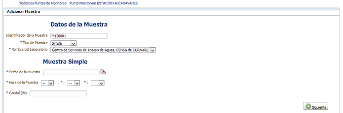
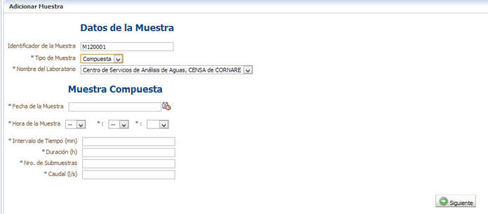
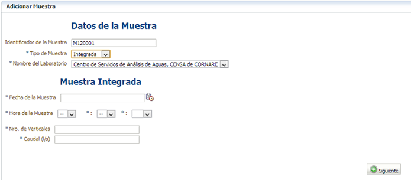

Este formulario le permite registrar los datos de una muestra SIMPLE, COMPUESTA o INTEGRADA, su identificador y el nombre del laboratorio que realizó el análisis.
Muestra Simple: proporciona información sobre la calidad en el punto y momento dado. Se solicitará la Fecha del Muestra, Hora y Caudal (L/s)

Muestra Compuesta: da una estimación de la condición promedio de la calidad del agua en el período de muestreo. Se obtiene mezclando varias muestras de igual volumen en un contenedor. Se solicitará la Fecha del Muestreo, Hora, Intervalo de Tiempo (min), Duración del muestreo (h), Número de Submuestras y el Caudal (L/s)

Muestra Integrada: se refiere a la mezcla de muestras tomadas simultáneamente en diferentes puntos o lo más cercanas posibles. Se solicitará la Fecha del Muestreo, Hora, Número de Verticales y el Caudal (L/s)

Registre la información correspondiente y de clic en el botón "Siguiente". El sistema le presnetará el formulario para registrar el resultado de las mediciones de los diferentes parámetros.